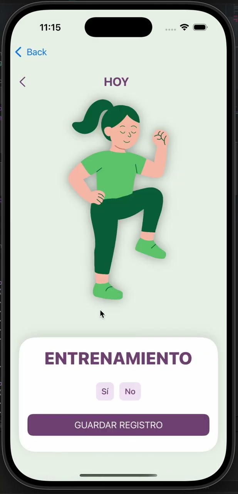

Case study, mobile app design
VITALIA
From counting to awareness: a nutrition app that helps you keep track of what you eat without turning food into guilt.
- Role
- Research, UX/UI and iOS development
- Context
- Mobile app design course, 9th semester, Universidad Iberoamericana Puebla
- For
- Young women at university
- Built with
- Swift (iOS)

The problem
Diet and fitness apps have become the default tool for eating better. But they're built around counting calories and controlling weight, and research has linked that focus to eating disorder symptoms: obsession with numbers, dependence on the app, anxiety about results, rigid diets and guilt when a goal is missed.
In one study, 21 of 24 participants had used MyFitnessPal. The colours it shows when you go over or under your calories worked like a game score, and for many women they hurt more than they helped.
The problem isn't a lack of data. It's the way the data is shown.
The context in Mexico
Guilt isn't the only barrier. According to the Mexican Health and Nutrition Survey, the main obstacles are money and time, on top of high rates of obesity, diabetes and heart disease.
58.6% say they don't have enough money to buy healthy food
51.2% say they don't have time to exercise
How might we design an app that doesn't just log food, but changes people's relationship with it: less guilt, and habits that are affordable and sustainable?
Who it's for
Andrea González
20, robotics engineering student in Puebla, Mexico
“I want to eat well so I have energy and focus, but when I see the calorie number I feel anxious and guilty if I go over.”
- Main goal
- Find balance and a healthy relationship with food.
- Motivation
- Strong mental health and less guilt around eating.
- Wish
- See nutrition as self-care that gives her energy for her studies.
- Need
- Positive messages and a tracking system that doesn't feed the obsession.
Pain points
- Key pain Obsession with counting calories and dependence on the app.
- Consequences Rigid diets and guilt get in the way of her relationships and grades.
- Frustration The colours in the apps make her anxiety and guilt worse when she eats too much.
- Fear Relapsing into eating disorder symptoms because of how the tools work.
Empathy map
What she sees
- Diet and fitness apps everywhere.
- Social pressure about food.
- High price tags on “healthy” food.
What she hears
- Contradictory advice about what “a diet” is.
- Messages that equate health with being thin.
What she thinks
- “I'm afraid my obsession will make me sick.”
- Anxiety about results, guilt when she misses a goal.
What she says
- “I don't have money for healthy food.”
- She tries to log calories, but it hurts her social and academic life.
Pains Obsession with numbers, dependence on the app, little money and little time.
Gains Overall wellbeing, a positive and mindful relationship with food, habits that are affordable and sustainable.
Process
I followed Design Thinking, a human-centred process in five iterative phases.
Empathize
Reviewed studies on how diet apps affect their users, to understand their pain points beyond the features.
Define
Added the local context (money and time) and turned it into one design question.
Ideate
Defined four value propositions: affordable nutrition, psychological wellbeing, personalised health and education.
Prototype
Built a low-fidelity prototype covering onboarding, the dashboard, “Eat without guilt” and affordable recipes, then developed it as an iOS app.
Test
Planned usability tests, interviews with users and an emotional impact check: does the app reduce stress and the urge to count?
App map
New users go through a short onboarding before reaching the home screen. From there, three sections: recipes, tips for the rest of the day and the profile.
- Welcome screen
- Sign up
- Onboarding
- Log in
- Sign up
- Home screen
- Recipes
- Breakfast
- Tips
- Physical activity
- Hydration
- Sleep
- Profile
- Recipes
Design decisions
-
A gauge instead of a number
The dashboard doesn't show a calorie count. A visual meter shows macronutrients, micronutrients and water, rewarding variety and balance instead of a total to beat.
-
Eat without guilt
A space with positive messages and self-care reminders: drink water, move, rest. Calories can be hidden, logging can be paused, and a craving is allowed.
-
Recipes that fit the budget
Practical weekly recipes with cheap, easy-to-find ingredients. Each one shows its estimated cost and preparation time.
-
Health on your terms
Users can add medical conditions to get adapted recommendations and connect with specialists. Educational content takes apart the idea of “being on a diet”.
Next idea: a smartwatch companion for gentle nudges like “drink water” or step updates.
See it working

A walkthrough of the app running in the iOS simulator. Logging the day is a yes or no, with no numbers to hit.
Watch the demo on YouTube ↗Visual identity
Naming
Vitalidad + Vida = VITALIA
Vitality and life in one word: the app is about feeling well, not about a number on a scale.
Colour palette
Purples carry the brand; greens come from the avocado and stand for food; warm tones are kept for details.
- Grape Soda #844E80
- Lavender #E9E2F9
- Mint Cream #E8F1E8
- Jungle Green #00A567
- Light Green #8CE695
- Wisteria #BBA4E7
- Powder Blush #FEBCAC
- Emerald Depths #006244
- Cinnamon Wood #AA734E
Typeface
Lemon Milk in bold, medium and regular: geometric and rounded, friendly without looking childish.
Sources
- Eikey, E. V. (2021). Effects of diet and fitness apps on eating disorder behaviours: qualitative study. BJPsych Open, 7(5). doi.org/10.1192/bjo.2021.1011
- Zavala, G. A., Ainscough, T. S., & Jimenez‐Moreno, A. C. (2022). Barriers to a healthy diet and physical activity in Mexican adults: results from the Mexican Health and Nutrition Survey. Nutrition Bulletin, 47(3), 298–306. doi.org/10.1111/nbu.12568